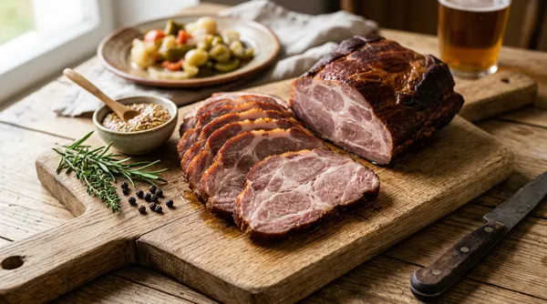
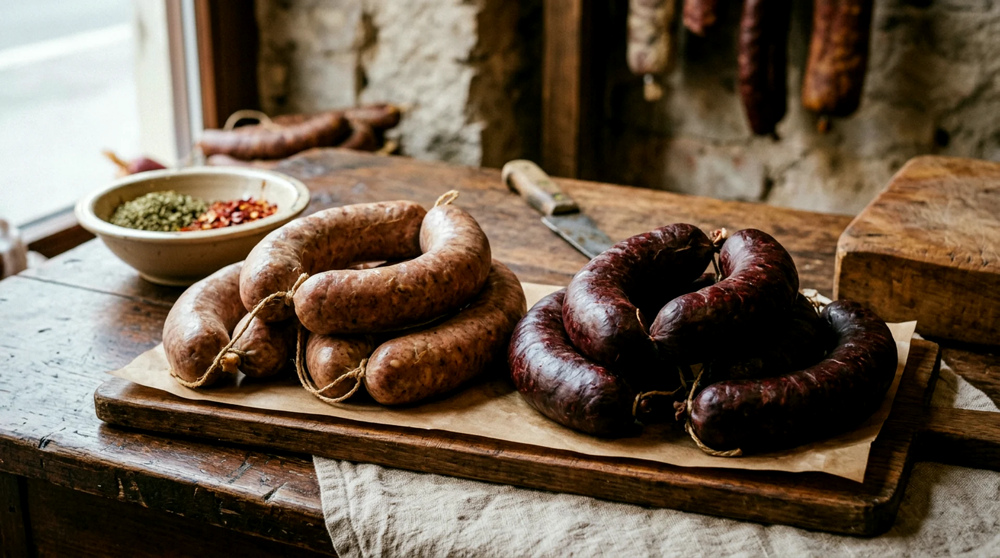
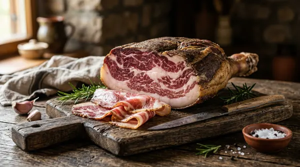
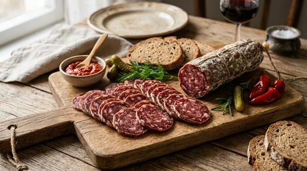
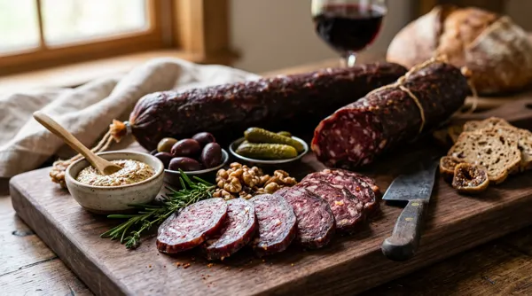
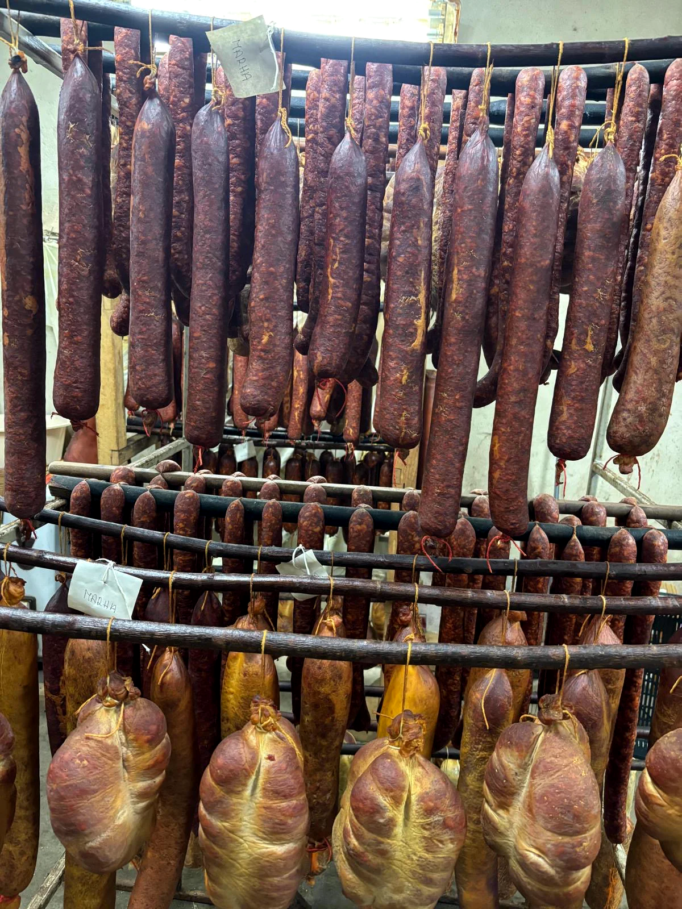
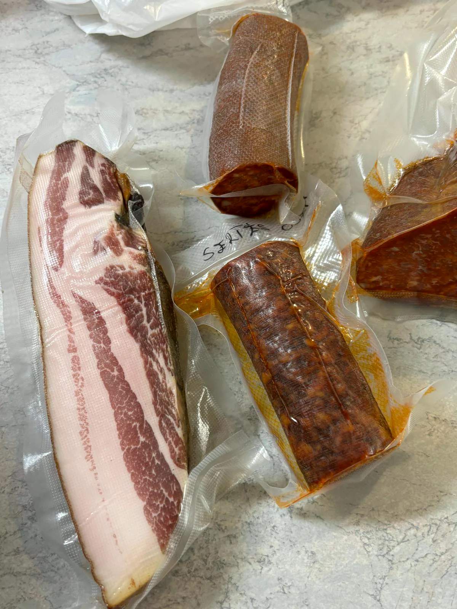

Füstölt tarja / karaj
Sokoldalú füstölt sertéshús, hidegen vékonyra szelve vagy főzve.
5 000 Ft/kg

Amit nálunk vesz, azt mi neveltük, mi termesztettük hozzá a takarmányt, és mi füstöltük, úgy, ahogy a nagyszüleinktől tanultuk.
Miért más ez a hús
Az állatot mi neveljük, a takarmányt mi termesztjük hozzá, a receptet a családtól örököltük. A bolti, nagyüzemi hústól ez választ el minket: nálunk a teljes út egy kézben van, az óltól a füstölőig.
Sertést, mangalicát és marhát tartunk, a saját portánkon. Ismerjük mindegyiket, és ez az ízén is érződik.
A takarmány és a fűszernövény is a mi földünkből nő ki. Nem veszünk zsákbamacskát, se az állatnak, se Önnek.
Családi receptek, kézi munka, bükkfa-füst és türelem. Hurka, kolbász, sonka. Úgy, ahogy a disznótorokon tanultuk.
A pult büszkeségei

Sokoldalú füstölt sertéshús, hidegen vékonyra szelve vagy főzve.

Az őshonos fajta mélyebb íze. Sózva, érlelve, szeletelve is.

Lassan érlelt, gazdag fűszerezésű házi stifolder mangalicából.
Húsos és véres hurka frissen. A disznótor lelke, sütnivalón.

Saját tartású marhából. Ritkaság, mély és karakteres ízzel.
Kolbászok, szalonnák, tepertő, disznósajt és a többiek.
Teljes kínálatA műhelyből



1 · Füst
A füstölőkamránkban nem sietünk. A sonka, a szalonna és a kolbász annyi időt kap, amennyi kell. A füst nem íz-spray, hanem türelem kérdése. Ez a fotó nem díszlet: ez a mi kamránk.
2 · Érlelés
Az érlelőnkben rudakon sorakozik a stifolder és a szalámi, kézzel írt cetlikkel. Nincs gyorsítás, nincs adalék-trükk, csak hűvös levegő, huzat és hetek.
3 · Kézből kézbe
Amit megrendel, azt mi mérjük, mi csomagoljuk, és vagy a pultnál adjuk át, vagy házhoz visszük. Rövid az út, ezért friss, ami az asztalára kerül.

Ahol minden kezdődik
Ez a kép a mi portánkon készült. Minden termékünk útja itt indul. Gondoskodással, szalmán, nyugalomban. Egy idősebb pécsi házaspár vagyunk, akiknek a jószág nem tétel a leltárban, hanem a mindennapok része.
Ismerje meg a történetünketAz üzletünk
Vasárnap és hétfőn zárva tartunk, ilyenkor a portán dolgozunk. A hét többi napján friss hurka, kolbász és minden más várja a pultnál. Vagy rendeljen a webshopból, és házhoz visszük.